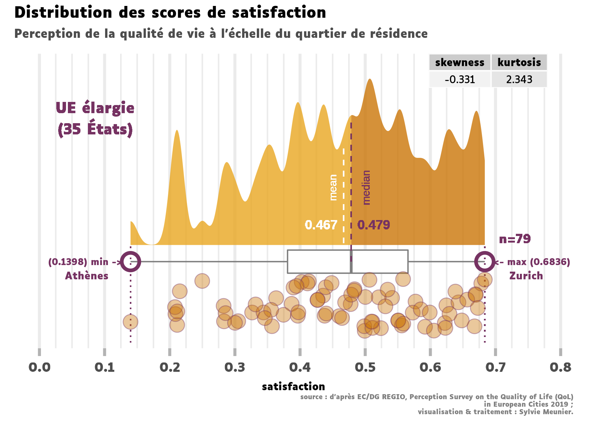
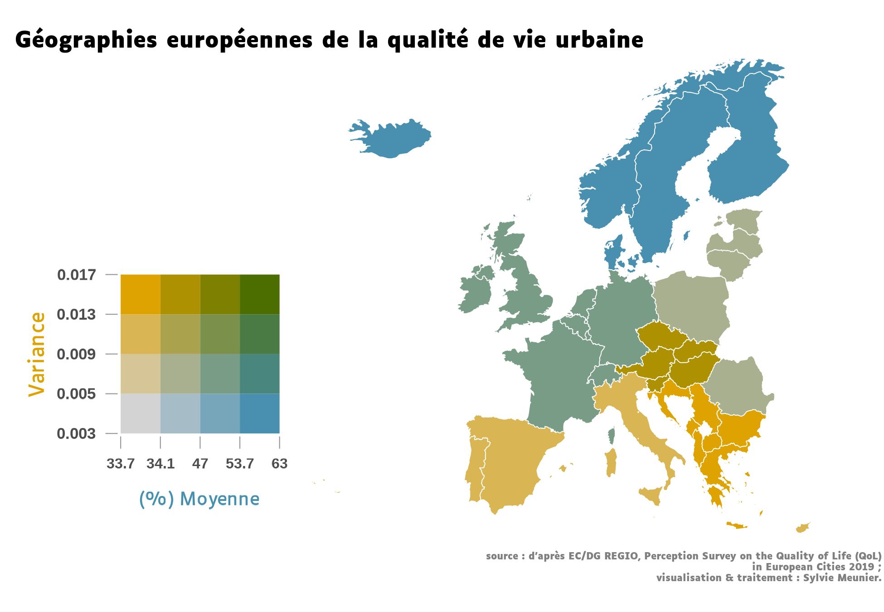
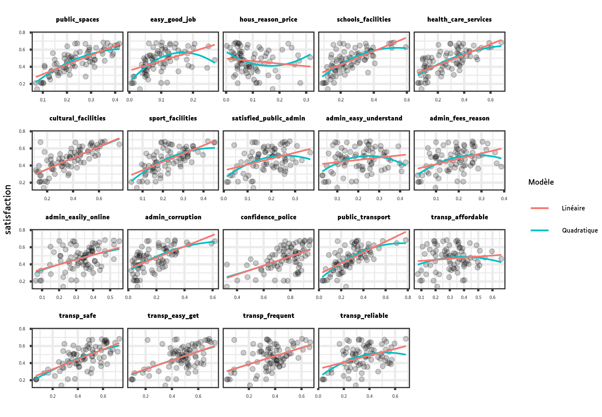
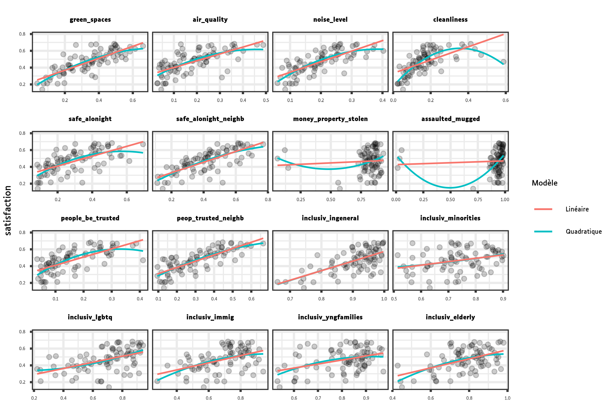
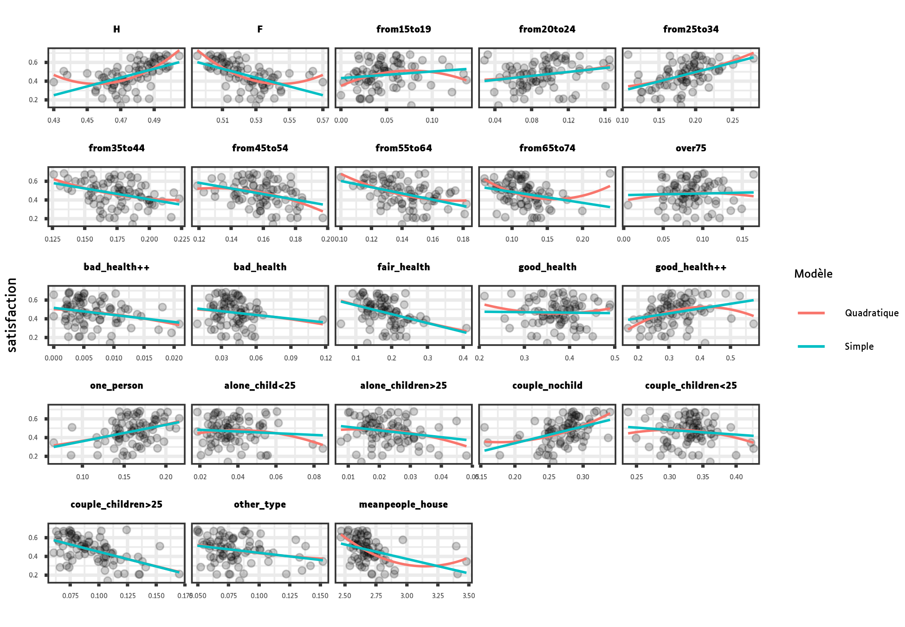
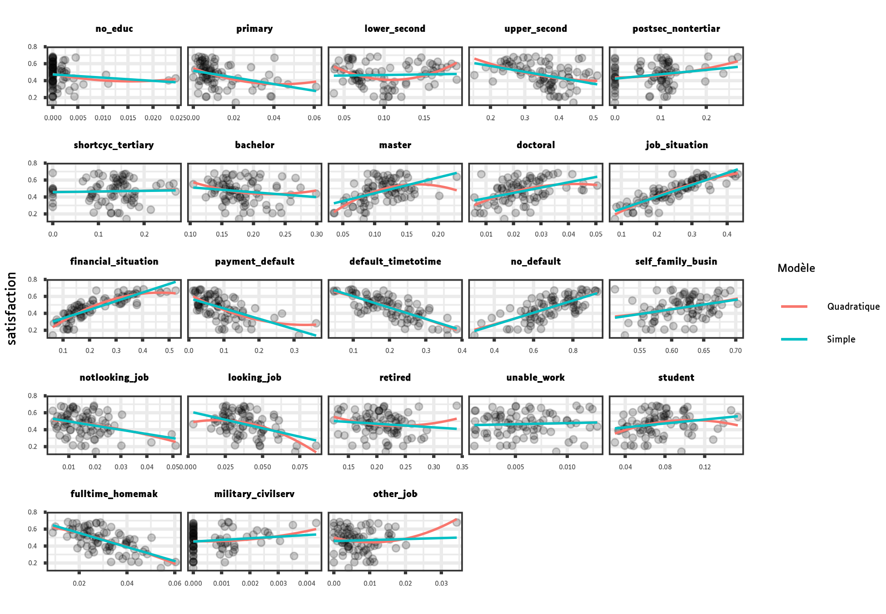
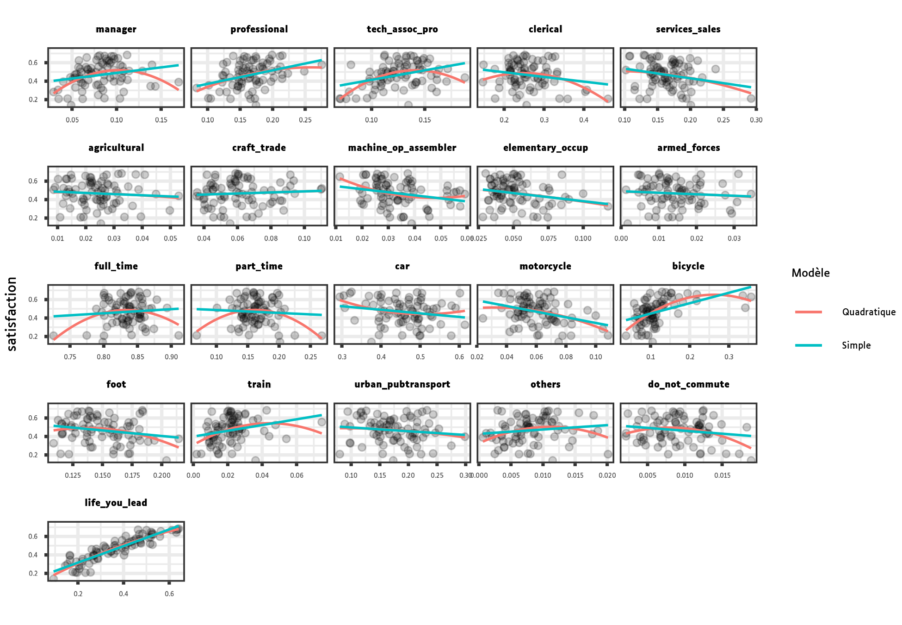

Un modèle prédictif, ça ne sert pas, au final, à faire une prédiction
Ces longues chaînes de raisons, toutes simples et faciles, dont les géomètres ont coutume de se servir, pour parvenir à leurs plus difficiles démonstrations, m’avaient donné occasion de m’imaginer que toutes les choses qui peuvent tomber sous la connaissance des hommes s’entre-suivent en même façon (…)
René Descartes, Discours de la méthode, 1637.
Dévoiler les règles d’un traitement algorithmique a été voulu par le législateur1 afin de rendre compte du raisonnement sous-jacent adopté et de garantir la régularité des décisions administratives individuelles.
1 Expliquer les algorithmes publics, guide en ligne élaboré par Etalab, département de la direction interministérielle du numérique de l’État.
Cette même démarche, celle de la mise à nu du fonctionnement d’un modèle, doit constituer, de la même manière, un passage obligé des choix démocratiques dès lors que l’action publique intègre un système d’intelligence artificielle.
Mais comment, notamment dans le cadre de la décision partagée ?
L’approche Responsable AI, ainsi que l’une de ses techniques, l’analyse exploratoire des modèles (EMA), me semblent être les bons outils à mobiliser. Il m’est agréable ici de recommander les ouvrages de Julia Silge & Max Kuhn, de Christoph Molnar ou encore de Przemyslaw Biecek & Tomasz Burzykowski. Leur présentation de l’EMA est lumineuse et ce billet leur doit tant.
1. L’analyse exploratoire des modèles ?
Les modèles construits pour représenter un phénomène sont évalués pour conserver le meilleur. Mais la performance prédictive est-elle le seul outil à notre disposition ?
Schéma simplifié de l’EMA centré sur le principe de redevabilité et les acteurs concernés.
L’EMA partage avec l’EDA une méthode itérative.
2. Cas : la qualité de vie dans les quartiers
La ville représente pour ses habitants la première manifestation de l’État. À ce titre, il lui incombe d’organiser les services publics et de favoriser la cohésion sociale par tout levier d’action publique mobilisable.
Identifier les signes avant-coureurs de fragmentation du tissu social et en évaluer l’ampleur est par conséquent un enjeu politique majeur. La poursuite de cet objectif peut aujourd’hui s’appuyer sur un matériau d’usage courant, les enquêtes de satisfaction concernant les aménités urbaines et les caractéristiques sociaux-démographiques de la population.
Afin d’illustrer mon propos, je vous invite à plonger sans plus attendre dans un exercice de modélisation de la qualité de vie telle que décrite par les habitants eux-mêmes. Le jeu de données sur lequel nous allons travailler a été construit à partir de l’enquête Perception Survey on the Quality of Life (QoL) in European Cities 2 (édition 2019, données agrégées). Cette enquête est menée depuis 2007 par la Direction générale de la politique régionale et urbaine (Commission européenne) auprès d’un panel de 700 habitants pour chacune des 83 métropoles d’Europe analysées.
2 Fichiers et Rapport 2020 : DG REGIO. NB : une réponse est un score allant de 1 à 4.
D’un point de vue méthodologique, il nous est apparu judicieux de déplacer le terrain d’observation de la ville vers le quartier. Ce choix repose sur l’épaisseur socio-historique qui est traditionnellement attachée à la notion de quartier : nous espérons ainsi obtenir un tableau comparatif, quartier par quartier, plus contrasté et donc plus apte à saisir les convictions qui se cristallisent autour de la qualité de vie.
Ce changement d’échelle a été opéré grâce à la question q4_013 de l’enquête Perception Survey on the Quality of Life (QoL) in European Cities. La variable d’intérêt, qscore, créée à partir de cette question, représente la proportion de répondants se déclarant très satisfaits de leur quartier.
3 “… on the whole, are you very satisfied, fairly satisfied, not very satisfied or not at all satisfied with: - The neighbourhood where you live …”
79 villes et 102 paramètres ont été intégrés dans notre étude et quelques variables hors sujet ont été supprimées.
data <- read.csv("qol2019.csv")
set.seed(2022)
data |>
select(city:area,qscore) |>
group_by(area) |>
slice_sample(n = 2, replace = FALSE) |>
mutate(across(where(is.numeric), round, digits=2)) |>
kbl("html") |>
kable_styling(
bootstrap_options = c("striped", "hover",
"condensed", "responsive"),
full_width = FALSE
)| city | country | area | qscore |
|---|---|---|---|
| Irakleio | EL | Balkans | 0.28 |
| Burgas | BG | Balkans | 0.46 |
| Ostrava | CZ | Europe centrale | 0.44 |
| Graz | AT | Europe centrale | 0.68 |
| Berlin | DE | Europe de l’Ouest | 0.54 |
| Bruxelles | BE | Europe de l’Ouest | 0.44 |
| Vilnius | LT | Europe orientale | 0.51 |
| Tallinn | EE | Europe orientale | 0.46 |
| Reykjavík | IS | Pays nordiques | 0.67 |
| Oslo | NO | Pays nordiques | 0.64 |
| Bologna | IT | Sud de l’Europe | 0.31 |
| Malaga | ES | Sud de l’Europe | 0.43 |


(survolez avec la souris chaque bulle et/ou les valeurs de la légende)
Les 102 variables prédictives sélectionnées peuvent être réparties en deux groupes :
35 prédicteurs urbains :
- dynamisme économique
- infrastructures et aménagements urbains
- services publics
- mobilités
- environnement
- sécurité
- mentalité propre à la ville ;


| public_spaces | public_admin_fees_reasonable | public_transp_reliable | people_can_be_trusted |
| easy_good_job | public_admin_easily_accessed_online | green_spaces | people_can_be_trusted_neighbourhood |
| easy_housing_reasonableprice | public_admin_corruption | air_quality | inclusiv_ingeneral |
| schools_facilities | confidence_police | noise_level | inclusiv_minorities |
| health_care_services | public_transport | cleanliness | inclusiv_lgbtq |
| cultural_facilities | public_transp_affordable | safe_alone_night | inclusiv_immig |
| sport_facilities | public_transp_safe | safe_alone_night_neighbourhood | inclusiv_young_families |
| satisfied_public_admin | public_transp_easy_get | money_property_stolen | inclusiv_elderly |
| public_admin_straightforward_easy_understand | public_transp_frequent | assaulted_mugged |
67 prédicteurs sociaux-démographiques :
- genre, âge, état de santé
- composition du ménage
- niveau d’étude
- niveau de revenus
- emploi occupé
- mode de transport privilégié
- degré d’optimisme.



| H | lone_parent_children_more25 | difficulties_bills_timetotime | craft_related_trade |
| F | couple_nochild | no_difficulties_pay | plate_machine_operator_assembler |
| from15to24 | couple_child_less25 | employee_self_empl_family_business | elementary_occupation |
| from25to34 | couple_children_more25 | unemployed_notlooking_job | armed_forces |
| from35to44 | other_type | unemployed_looking_job | full_time |
| from45to54 | mean_people_house | retired | part_time |
| from55to64 | no_secondary | unable_work | car |
| from65to74 | lower_secondary | student | motorcycle |
| over75 | upper_secondary | fulltime_homemaker | bicycle |
| very_bad_health | shortcycle | other_jobs | foot |
| bad_health | bachelor | manager | train |
| fair_health | master | professional | urban_public_transport |
| good_health | doctoral | technician_associate_pro | others |
| very_good_health | job_situation | clerical | do_not_commute |
| oneperson_household | financial_situation_household | services_sales | life_you_lead |
| lone_parent_child_less25 | difficulties_bills_most_time | agricultural | satisfied_city |
3. Expérimentation : splines & GAMs
Une ligne d’introduction
| Explication | locale | cohorte | globale |
| Observation | élément unique | sous-ensemble | ensemble |
| Notation | x_i | I \subset D_N | D_N=\{(x_i,y_i)\}_1{_\leq{_i{_\leq{_N}}}} |
| Phénomène | individu | groupe d’individus | population |
A nouveau un paragraphe.
Rappel : un modèle de régression linéaire multiple pour n observations collectées et p variables s’écrit de la manière suivante :
y_i = \beta_0 + \beta_1 x_i{_1} + ... + \beta_p x_i{_p} + \epsilon_i, i = 1,...,n